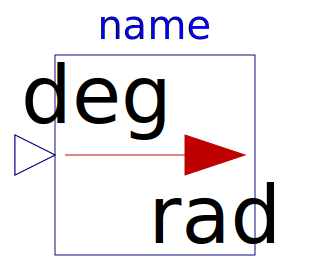
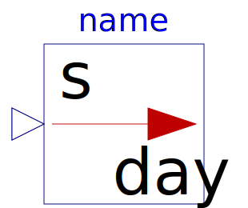
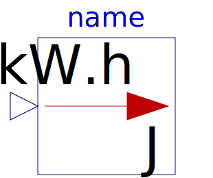
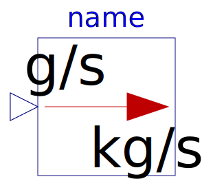

This package consists of blocks that convert an input signal with a specific unit to an output signal in another unit (e.g., conversion of an angle signal from "deg" to "rad").
| Name | Description |
|---|---|
| Convert from Kelvin to degCelsius | |
| Convert from degCelsius to Kelvin | |
| Convert from Kelvin to degFahrenheit | |
| Convert from degFahrenheit to Kelvin | |
| Convert from Kelvin to degRankine | |
| Convert from degRankine to Kelvin | |
| Convert from radian to degree | |
|  From_deg | Convert from degree to radian |
| Convert from radian per second to revolutions per minute | |
| Convert from revolutions per minute to radian per second | |
| Convert from metre per second to kilometre per hour | |
| Convert from kilometre per hour to metre per second | |
|  To_day | Convert from second to day |
| Convert from day to second | |
| Convert from second to hour | |
| Convert from hour to second | |
| Convert from second to minute | |
| Convert from minute to second | |
| Convert from cubic metre to litre | |
| Convert from litre to cubic metre | |
| Convert from Joule to kilo Watt hour | |
|  From_kWh | Convert from kilo Watt hour to Joule |
| Convert from Pascal to bar | |
| Convert from bar to Pascal | |
| Convert from kilogram per second to gram per second | |
|  From_gps | Convert from gram per second to kilogram per second |